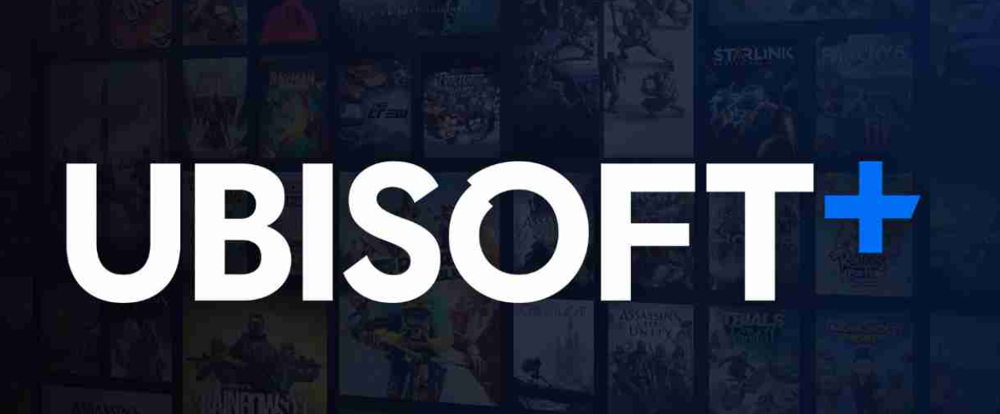

Ubisoft +
Ubisoft+ Premium es una suscripción que permite jugar en consolas. También existe Ubisoft+ Classics, que incluye una selección de juegos icónicos de Ubisoft en sus ediciones estándar.
Ahora tambien disponible para todos los paises de America latina gracias a ABYA, una compania lider de juegos en la nube.
| Disponible en | PC, consolas Xbox y Luna |
| Que incluye | Más de 100 juegos, expansiones, pases de temporada, juegos independientes |
| Descuentos | 20% de descuento en juegos y DLC, 10% de descuento en monedas virtuales |
| Premios | Desbloqueo de premios mensuales en el juego, como personalizaciones y potenciadores |